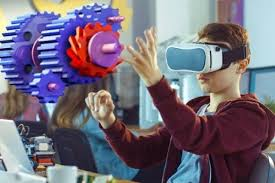
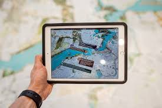

La realidad aumentada o RA es un término que describe a todas las tecnologías capaces de incorporar elementos virtuales de manera gráfica dentro del mundo real. Ya que los objetos, datos, vectores e imágenes que el usuario percibe se posicionan en el contexto físico que lo rodea, esta tecnología permite una interactividad única con el entorno, en tiempo real.
La capacidad de unir lo virtual y lo físico es uno de los principales atractivos de esta herramienta, esto se debe a que puede adaptarse a cualquier espacio y aprovechar todas las dimensiones para incrementar la percepción del usuario, arrojando datos de interés y asistiendo en sus actividades.
  Inteligencia Artificial ir a realidad virtual